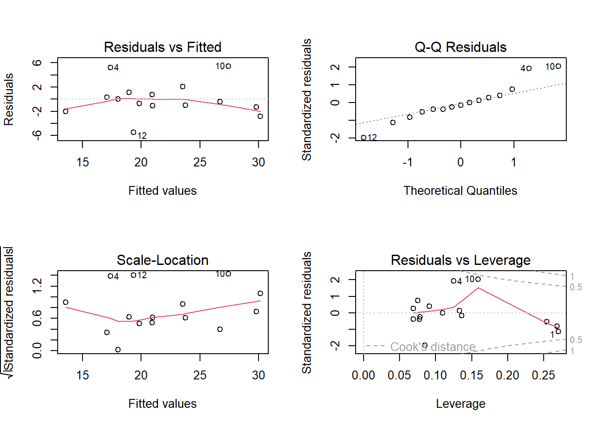

Chapter 9: Linear regression, correlation and introduction to general linear models
Author
Jakub Těšitel
Regression and correlation
Both regression and correlation refer to associations between two quantitative variables. One variable, the predictor, is considered independent in regression, and its values are considered not to be random. The other variable, the response, is dependent on the values of the predictor with a certain level of error variability, i.e. it is a random variable.
In the case of correlation, both variables are considered random. Regression and correlation are thus quite different – theoretically. In practice, however, they are numerically identical concerning both the measure of association and p-values (Type I Error probabilities) associated with rejecting the null hypothesis on independence between the two variables.
Linear regression
Parameter estimation
Linear association between two quantitative variables \(X\) and \(Y\), of which \(Y\) is a random variable, can be described by the equation:
\[
Y = a + b X + \epsilon
\]
where \(a\) and \(b\) are intercept and slope of a linear function, respectively. These represent the systematic (deterministic) component of the regression model, while \(\epsilon\) is the error (residual) variation representing the stochastic component. \(\epsilon\) is assumed to follow the normal distribution with mean = 0.
The goal of regression model fitting is to estimate the population slope and intercept from sample data of \(Y\) and \(X\). \(a\) and \(b\) are thus estimates of population parameters (\(\alpha\) and \(\beta\).
There are multiple approaches to conduct such estimates. Maximum-likelihood estimation is most common, which provides numerically identical results to least-square estimation in ordinary regression.
We shall discuss the least-square estimation here, as it is fairly intuitive and will help us to understand the relationship with ANOVA. The least-square estimation aims at minimizing the sum of error squares (\(SS_{error}\)), i.e. the squares of the differences between fitted and observed values of the response variable (Fig. 1).
Show R Script
set.seed(321)# sample sizen <-15# X values (independent predictor, uniform distribution)x <-runif(n, min =4, max =14)# set population (true) parametersalpha <-5.0beta <-1.8# generate error/noise which should have Normal distribution with mean = 0epsilon <-rnorm(n, mean =0, sd =2.5)# calculate Y (response variable)y <- alpha + (beta * x) + epsilon# fit the modelm <-lm(y ~ x)# print resultssummary(m)
Call:
lm(formula = y ~ x)
Residuals:
Min 1Q Median 3Q Max
-5.4848 -1.1985 -0.4328 0.9245 5.4332
Coefficients:
Estimate Std. Error t value Pr(>|t|)
(Intercept) 5.4578 2.6901 2.029 0.0635 .
x 1.8199 0.2872 6.336 2.59e-05 ***
---
Signif. codes: 0 '***' 0.001 '**' 0.01 '*' 0.05 '.' 0.1 ' ' 1
Residual standard error: 2.907 on 13 degrees of freedom
Multiple R-squared: 0.7554, Adjusted R-squared: 0.7365
F-statistic: 40.14 on 1 and 13 DF, p-value: 2.594e-05
Figure 1: Mechanism of least square estimation in regression: definition of squares exemplified with the red data point.
Note that this mechanism is notably similar to that of analysis of variance. In parallel with ANOVA, we can also define the total sum of squares (\(SS_{total}\)) and the regression sum of squares (\(SS_{regr}\)). Subsequently, we can calculate mean squares (\(MS\)) by dividing \(SS\) by corresponding \(DF\), with:
\[
DF_{total} = n\ -\ 1
\]
where \(n\) is total number of observations,
\[
DF_{regr}\ =\ k\ =\ 1
\]
where \(k\) is the number of estimated parameters (in this case \(k\ =\ 1\) because we have only one predictor, i.e., \(X\) variable, for which we estimate the parameter \(b\)1),
Rejecting the null hypothesis then means that the two variables are linearly related. Note, however, that a non-significant result may also be produced in cases when the relationship exists but is not linear (e.g., when it is quadratic).
In regression, we are usually interested in statistical significance and the strength of the association, i.e. the proportion of variability in \(Y\) explained by \(X\). That is measured by the coefficient of determination (\(R^2\)):
\[
R^2 = \frac{SS_{regr}}{SS_{total}}
\]
which can range from 0 (no association) to 1 (deterministic linear relationship). Alternatively, so-called adjusted\(R^2\) may be used (and is reported by R), which accounts for the fact that the association is computed from samples and not from populations:
Coming back to the regression coefficients – the fact that these are estimates means that associated errors of such estimates may be computed. We can use t-test to test, if these coefficients (\(a\) and \(b\)) are significantly different from zero. Interestingly, in simple regression with only one predictor the p-value for the slope’s t-test will be exactly the same as the F-test.
Note, that the test of the intercept \(a\) (reported by R or other statistical software) is irrelevant for the significance of the regression itself. Significant intercept only indicates that mean(Y) is significantly different from zero.
Regression diagnostics
We have discussed the systematic component of the regression equation. However, the stochastic component is also important. This is because its properties can provide crucial information on the validity of regression assumptions and thus the validity of the whole model. The stochastic component of the model, called model residuals, can be computed using the equation:
\[
\epsilon = Y - a - bX = Y - Y_{fitted}
\]
Residuals form a vector of values for each of the data points. As such, they can be analyzed by descriptive statistics. They may also be standardized by division of their standard deviation. The basic assumptions concerning the residuals are:
Residuals should follow the normal distribution
The size of their absolute value should be independent of the fitted value
There should be no obvious trend in residuals associated with fitted values, which would indicate the non-linearity of the relationship between \(X\) and \(Y\)
These assumptions are best evaluated on a regression-diagnostics plot (Fig. 2). In addition, it may be worth checking that the regression result is not driven by a single extreme observation (or a few of these), which is provided on the bottom-right plot in Fig. 2.
Show R Script
par(mfrow =c(2,2))plot(m)

Figure 2. Regression diagnostics plots. (1) Residuals vs. fitted values indicate potential non-linearity of the relationship (smoothed trend displayed by the red line). (2) Normal Q-Q plot displays agreement between normal distribution and distribution of residuals (dashed line). (3) Square root of the absolute value of residuals indicate a potential correlation between the size of residuals and fitted values. (4) Residuals vs. leverage (https://en.wikipedia.org/wiki/Leverage_(statistics)) plot detect points, which have a strong influence on the regression parameter estimates (these points have high Cook distance; https://en.wikipedia.org/wiki/Cook%27s_distance).
Show R Script
par(mfrow =c(1,1))
See also the detailed explanation of regression diagnostics here.
Correlation
Correlation is a symmetric measure of the association between two random variables, of which neither can be considered a predictor or a response. Correlation is most commonly measured by the Pearson correlation coefficient:
Its values can range from \(- 1\) (absolute negative correlation) to \(+ 1\) (absolute positive correlation), with \(r = 0\) corresponding to no correlation. \(r^2\) then refers to the amount of shared variability. Numerically, Pearson \(r^2\) and regression \(R^2\) have identical values for given data and have basically the same meaning. Pearson \(r\) is also an estimate of the population parameter; its significance (i.e. significant difference from zero) can thus be tested by a t-test with \(n – 2\) degrees of freedom.
On correlation and causality
A significant result of a regression of observational data may only be interpreted as correlation (or coincidence) despite there is a variable called the predictor and the response.
Causal explanations imply that a change of predictor value causes a directional change in the response. Causality may, therefore, only be tested in manipulative experiments, where the predictor is manipulated. the See more details on this in Chapter 6.
NoteHow to do in R
1. Regression (or linear model)
start with function lm to fit the model and save the lm output into an object:
# one predictormodel.1<-lm(response ~ predictor) # more predictorsmodel.2<-lm(response ~ predictor1 + predictor2 + predictor_n)
anova(model.1) performs analysis of variance of the model (i.e. tests its significance by F-test). Models may also be compared by anova(model.1, model.2)
summary(model.1)displays a summary of the model, including the t-tests of individual coefficients
resid(model.1)extracts model residuals
predict(model.1) returns predicted values
plot(model.1)plotsregressiondiagnostic plots of the model
2. Pearson correlation coefficient
cor(Var1 ~ Var2) computes just the correlation coefficient
cor.test(Var1~Var2) computes the coefficient value together with significance test
3. Plotting
Plotting a scatterplot with regression line is straightforward in ggplot:
geom_point() is used to produce the scatterplot
geom_smooth(method = "lm”) can be used to add the regression line with confidence intervals. The line color can be adjusted by parameter color in the geom_smooth() function
For instance, the full script to plot e.g. the plot of Task 1 of the practicals is:
ggplot(snow,aes(x = temp, y = diam)) +geom_point() +geom_smooth(method ="lm", color =1) +labs(x ="Temperature", y ="Snowflake diameter") +theme_classic()
Exercises
Snowflakes can have very different sizes, which might depend on the temperature of the ice crystals from which they are formed. In winter 2021, mean snowflake size and ice crystal temperature were recorded during 14 snowing events in Brno. The resulting data are summarised in the table below:
Snowing event No.
Mean snowflake ice crystal temperature (°C)
Mean snowflake diameter (mm)
1
-18
6.9
2
-20
7.1
3
-5
8.5
4
-12
8
5
-8
8.7
6
-9
8.5
7
-2
10.2
8
-14
7.1
9
-8
8.4
10
-17
6.2
11
-2
9.9
12
-4
9.3
13
-3
10.2
14
-12
7.6
How does the snowflake size depend on temperature?
Perform a statistical analysis, support it with a figure, and present a conclusion. In addition to the statistical model, report the regression equation describing the dependence of snowflake size on temperature.
What can we say about the snowflake size at 5°C?
The Intelligence Quotient (IQ) of Czech Ministry of Interior Affairs employees was measured. These people were also asked about the average amount of beer they drink daily. The results were as follows:
IQ
Beer (litres)
69
2
84
3.5
95
4.6
98
1.2
65
8
105
1.1
87
2.3
91
3.2
94
1
111
0.5
110
8
75
1
Is the amount of beer consumed correlated with the intelligence of Czech Ministry of Interior Affairs employees?
530 School children took part in a swimming competition. Their height was also measured in addition to their swimming speed. Is swimming speed significantly affected by children’s height?
The data are available in an Excel spreadsheet on Sheet 3.
#AI Ask your favourite LLM to solve Task 1 and generate the corresponding R script.
Tasks for independent work
Dependence of THC concentration in blood on the amount of cannabis smoked was analyzed in one person who smoked different amounts of dried cannabis from the same source (DW = dry weight). The intervals between measurements were long enough to decrease of THC concentration to 0 before each trial.
Smoking event
THC (mg/ l blood)
Cannabis DW (g)
1
10.1
5.3
2
3
1.2
3
8.7
3.8
4
12.3
8.5
5
20.8
9.1
6
5.9
3.1
7
10.1
4.5
8
12.3
8.5
9
5.9
6.5
10
10.1
7.8
Does THC concentration in the blood depend on the amount of cannabis smoked?
Perform a statistical analysis and illustrate it with a figure.
20 books published in recent years were randomly selected in a bookshop. The numbers of pages were counted for each book, and the age of the author was retrieved. The resulting data were as follows:
Author age
Number of pages
57
568
41
302
23
102
56
574
85
600
57
162
74
128
85
405
61
201
35
129
38
204
62
305
45
450
41
275
43
320
75
401
56
230
51
222
31
188
48
196
Does the author’s age have an effect on the thickness of books?
Perform a statistical analysis and illustrate it with a figure.
The relationship between the mean age of children in a family and the height of the Christmas tree was studied. The resulting data were the following:
Tree height (m)
Age
2.2
3.5
3.1
4.2
0.8
15.8
2.5
7.6
1.4
12.8
1.7
16.4
1.2
15.3
2.8
6.5
0.9
19.5
1.6
5.6
Does the age of children in the family affect the height of the Christmas tree bought by the parents?
During a field survey, 10 frogs were captured, measured (body length and body mass), and released. The following data were obtained:
Frog
Body mass (g)
Body length (mm)
1
7
56
2
10
71
3
11
80
4
8
53
5
9
61
6
14
91
7
8
64
8
11
79
9
12
85
10
8
62
Is there any correlation between body mass and length in frogs? What is the proportion of variability shared by the two variables?
The relationship between car mass and fuel consumption was studied. The resulting data are summarised in the table below.
Car mass (kg)
Fuel consumption (liter per 100km)
1540
6.5
1100
4.7
1230
4.3
2410
5.9
1890
6.5
1220
5.3
1080
4.7
2340
7.1
3030
7.8
1930
8.2
1460
5.6
Does the fuel consumption depend on car mass? Perform a statistical analysis and illustrate it with a figure.
Footnotes
The parameter \(a\) (intercept) is not lost, but already included in the \(DF_{total} = n - 1\).↩︎